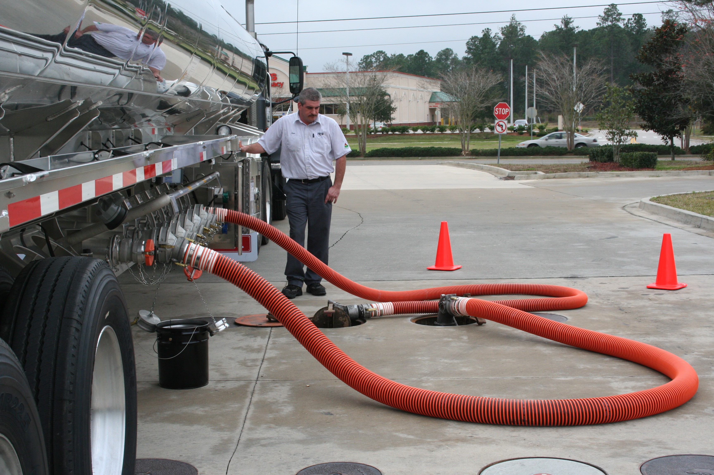

Our Mission Statement: Safely Delivering Our Customers’ Products On Time and Accurately. Florida Rock & Tank Lines is committed to satisfying our customers' needs with safe, quality service that conforms to mutually agreed requirements. In order to meet this goal, we consistently work to exceed customer expectations regarding safety, quality, service and value. We accomplish this goal with a total commitment to excellence throughout our company and by performing our jobs right the first time, every time, and as planned.
Our Guiding Principles: Florida Rock & Tank Lines follows certain principles to accomplish this mission. Our continuing quest for excellence and commitment to improve the services we provide to our customers includes your involvement in the area of product delivery. These principles provide a set of standards, which guide decisions made throughout the organization
We will:
Our Quest for Excellence is absolute. The costs and dangers associated with misdeliveries are not acceptable. In pursuing our mission, Florida Rock & Tank Lines strives to be recognized for the quality of its service and people. We will be characterized by responsiveness in the marketplace, teamwork and cooperation in the workplace, and pride in our accomplishments. Our Quest for Excellence is only one component of our quality improvement process.
